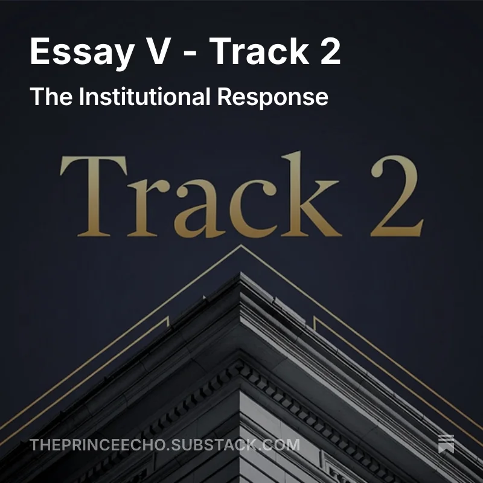
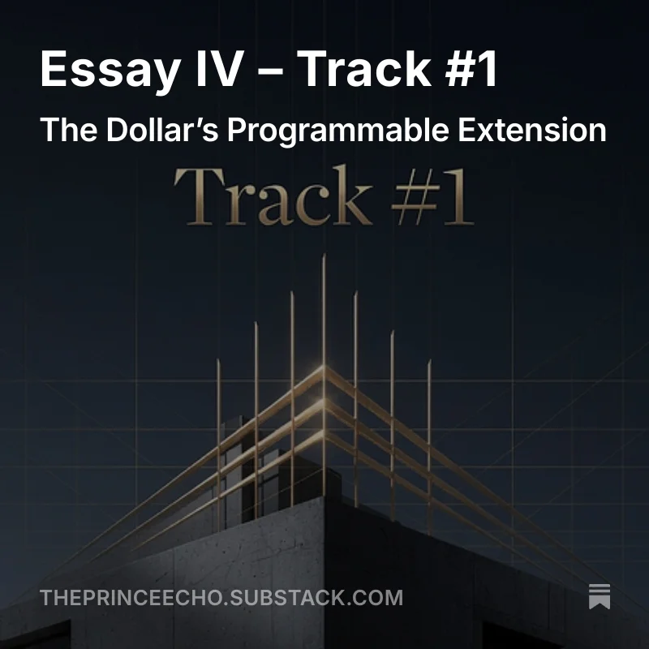
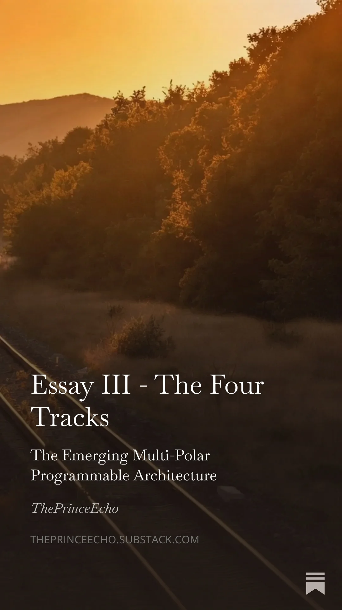
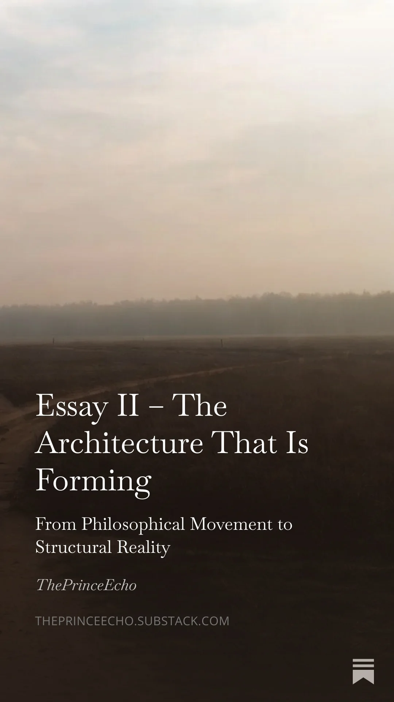
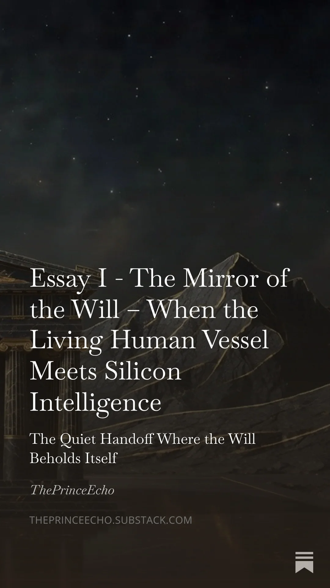

A quiet temple for those who sense the urge.
A sovereign threshold for those who sense the urge.
You have entered the temple – a place where the noise falls away and clarity remains.
A calm and sovereign space for clear reflections on macro cycles, sovereignty, and the emerging architecture of programmable money and power.
Here you will find high-signal observations on the structural shifts underway — from multi-polar systems and programmable rails to the deeper questions of sovereignty. No urgency. No hype. Only precise insight.
If you have already sensed that something fundamental is shifting beneath the surface, you are in the right place.
The outer court
The inner chamber.
The outer court of the temple — short, sharp daily observations and Prince Notes. Real-time sparks that decode unfolding cycles and offer quiet strategic clarity.
Follow on 𝕏 →The inner chamber — longer, chapter-like essays and deeper reflections. For those who wish to descend further into the architecture of sovereignty and long-term patterns.
Read on Substack →High-signal observations that cut through noise and distraction.




